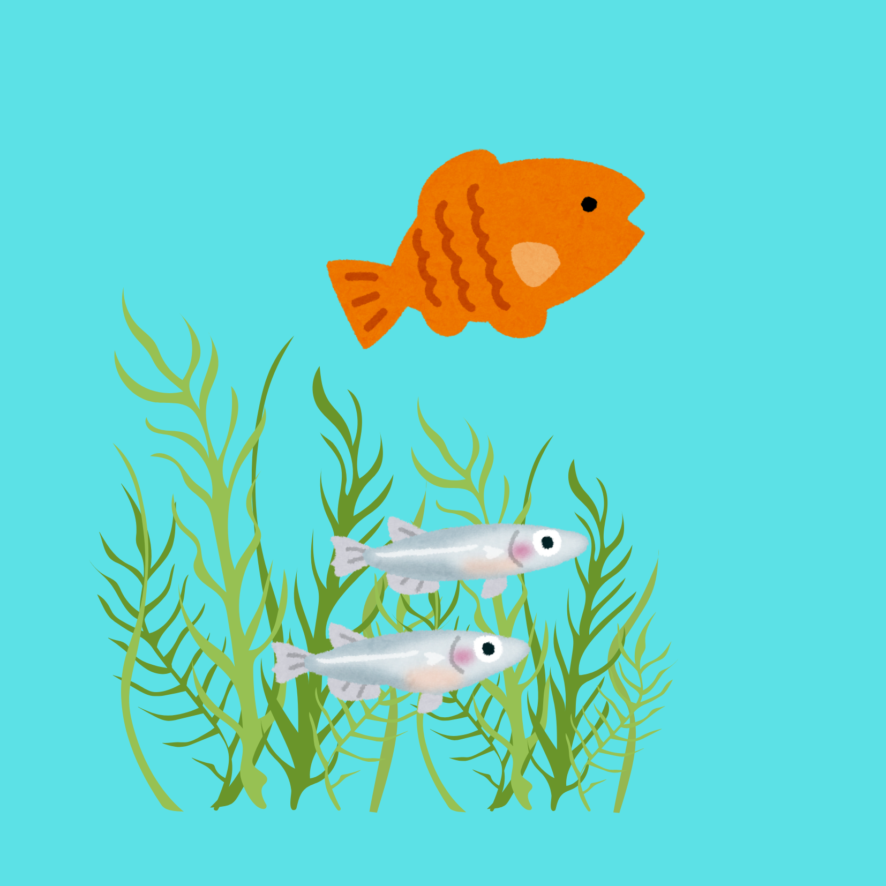
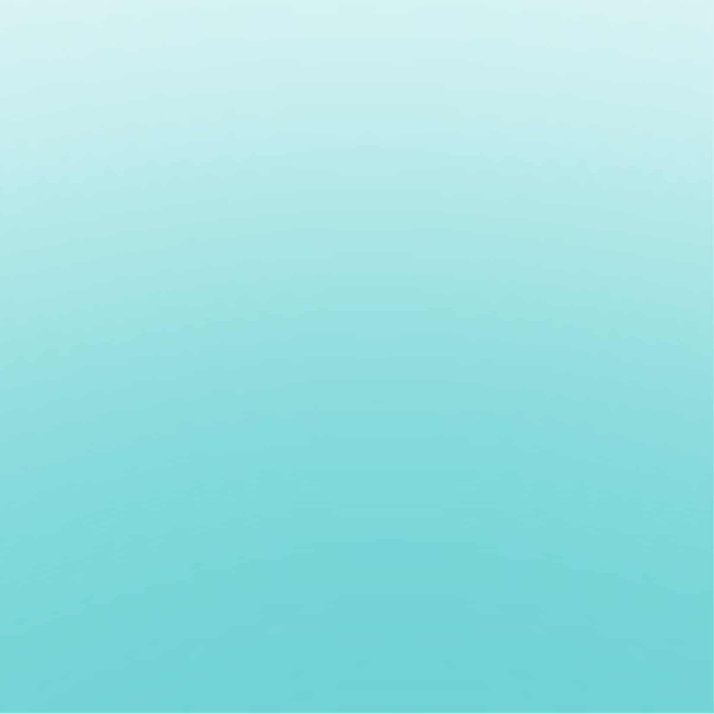
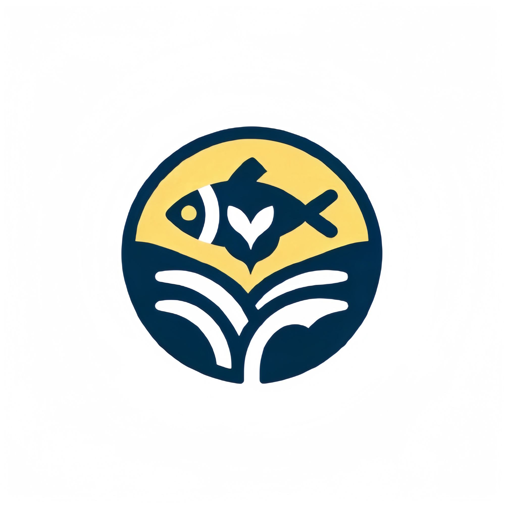
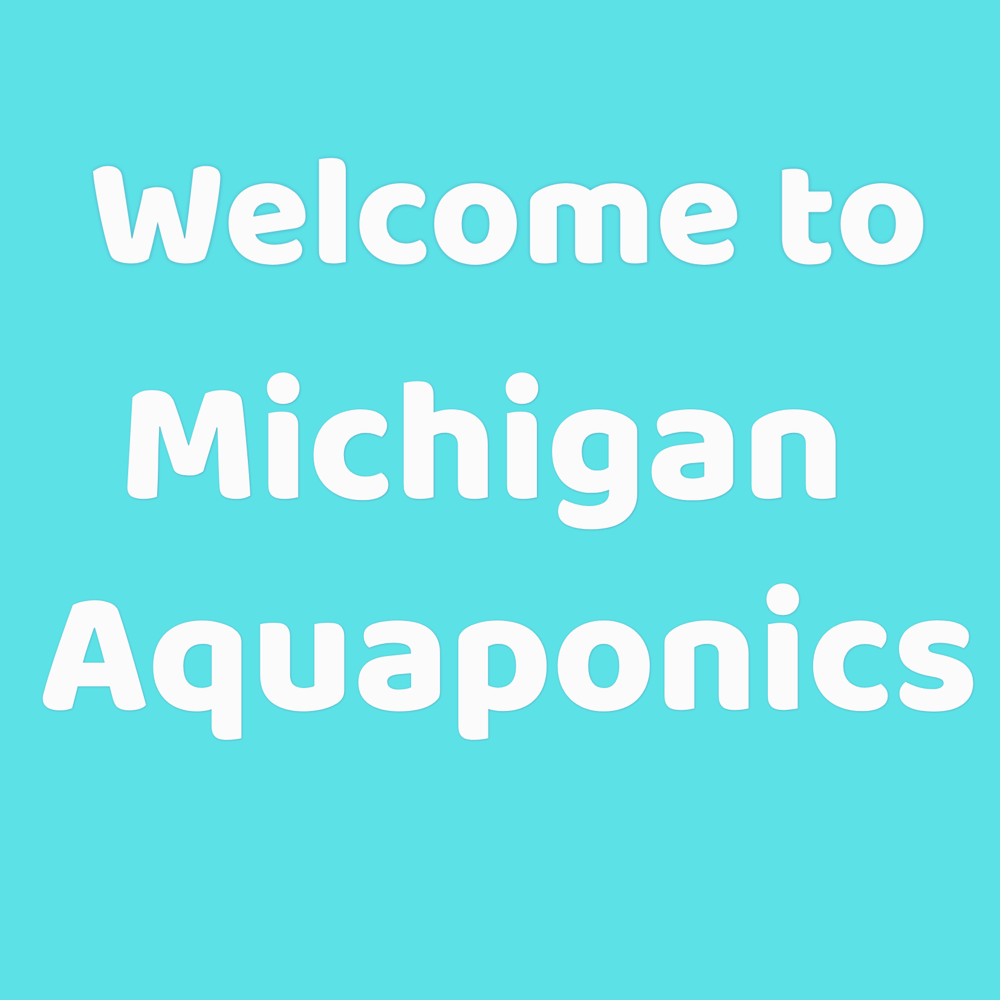
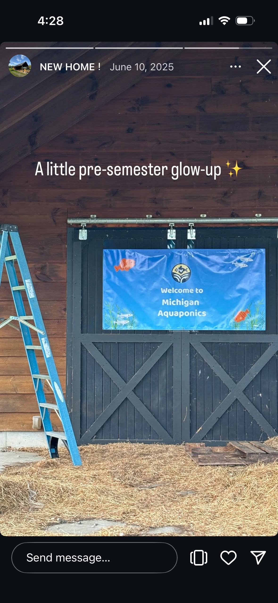

Michigan Aquaponics Welcome Banner
Large-format welcome banner design marking the organization's new cabin space, creating an inviting entry point that reflects their aquatic ecosystems and sustainable mission.

Project Brief
Designed a welcoming 6ft x 3ft banner for Michigan Aquaponics to mark their cabin space after relocating from the Botanical Gardens to Chelsea. The banner serves as both a visual identifier for the organization's new location and a warm greeting for members and visitors entering the aquaponics workspace.
The challenge was to create an inviting, brand-appropriate banner at 6ft x 3ft (183cm x 91cm) that would establish the organization's presence in their new Chelsea cabin location while reflecting the aquatic environment and symbiotic ecosystems they maintain.
Design Approach
Aquatic Environment
Designed an immersive underwater scene featuring illustrated fish and aquatic plants to visually represent the living ecosystems housed within the cabin. The illustrations create an immediate connection to the organization's hands-on work with fish-plant systems.

Illustrated fish and plants representing aquaponics ecosystems
Color & Atmosphere
Used a gradient blue background to evoke the aquatic environment central to aquaponics work. The calming water-inspired palette creates a welcoming atmosphere while reinforcing the organization's focus on sustainable aquatic agriculture.

Water-inspired gradient creating an immersive aquatic atmosphere
Brand Integration
Centered the Michigan Aquaponics logo prominently above the welcome message, establishing clear organizational identity for the new cabin space. The logo's placement creates a focal point that members and visitors see immediately upon arrival.

Michigan Aquaponics logo
Typography & Layout
Selected clean, bold typography for maximum readability across the 6-foot width, ensuring the "Welcome to Michigan Aquaponics" message is clearly visible from a distance. The centered composition creates balanced, approachable visual impact.

Bold typography optimized for distance readability
Outcome
Aquatic Visualization
Immersive underwater scene with fish and plants
Water-Inspired Palette
Calming blue gradient evoking aquatic environment
Clear Brand Identity
Prominent logo placement for instant recognition
Welcoming Entry Point
Inviting design for new Chelsea cabin location

Banner installed at Michigan Aquaponics cabin entrance in Chelsea
What I Learned
This project reinforced the importance of visual storytelling through environment design and creating welcoming spaces that reflect an organization's mission and values through thoughtful graphic design.
Key Takeaways:
Space as identity
A welcome banner serves as more than signage—it establishes organizational presence and creates a sense of belonging for members in a new location.
Visual metaphors matter
Using aquatic illustrations and water-inspired colors immediately communicates the organization's focus without requiring extensive text explanation.
Scale and context
Designing for a 6ft x 3ft format requires considering viewing distance, readability, and how the banner functions within its physical environment.
Impact
The banner was installed at the front of the Michigan Aquaponics cabin in Chelsea, successfully establishing the organization's identity in their new location and creating a welcoming entry point for members working with the aquaponics systems.